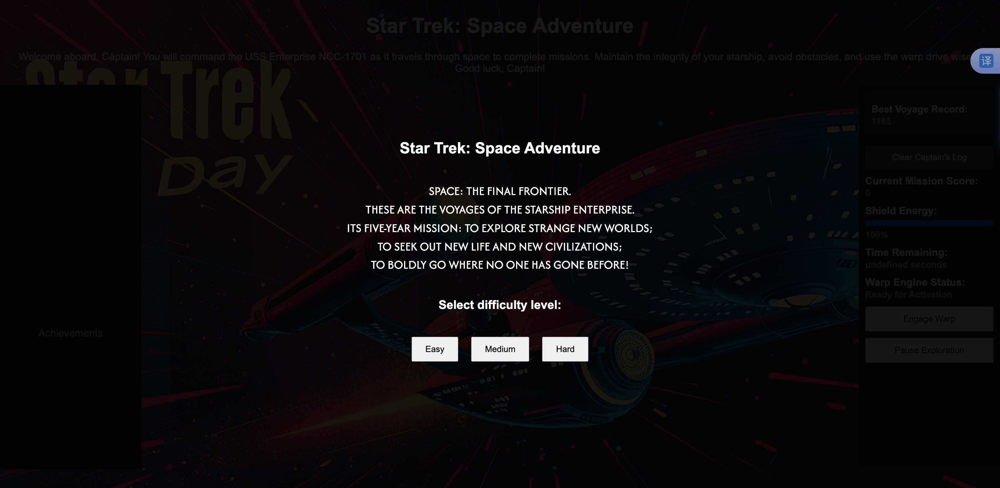

Game Screenshots

This game is inspired by my interest in Star Trek. The player will command the USS Enterprise, avoiding asteroids, collecting energy crystals, and using warp drive. The goal is to survive and maintain shield power while completing various missions. The crew dialogue system provides updates on the ship's status, adding immersion and authenticity to the gameplay.
The idea for this game comes from classic space games where players navigate through obstacles. When I saw that the assignment required creating obstacles, I thought Star Trek would be a perfect theme to integrate with these mechanics. It allowed me to add an engaging narrative while keeping the gameplay simple and enjoyable.
Originally, the first idea that came to my mind was the Chrome offline dinosaur game. However, I had previously worked on a similar project, and this time I wanted to choose a theme that I am passionate about: Star Trek. This gave me the chance to incorporate a fun narrative into a classic obstacle-based space game.
In terms of visual style, I prefer pixel art, which is a common style for small games. I generated assets for the space background, asteroids, energy crystals, and the starship using ChatGPT. I attempted to create pixel art myself, but I felt the primary focus should be coding, so I chose generated assets for simplicity. For the background, I paid and used star trek related asset from Freepik, which perfectly captures the retro sci-fi opera vibe I was aiming for.
I faced several challenges during the development process. Initially, I used p5's instance mode but encountered bugs, so I switched to using iframes to handle different game components. Another challenge was managing crew messages without overlap, and I had to adjust game timers and cooldown mechanisms to balance the difficulty.
Additionally, it's interesting to find appropriate sound. I eventually sourced sound effects from FreeSound.org to align with the space theme for creating an immersive atmosphere.
Click here to play Star Trek: Space Adventure!